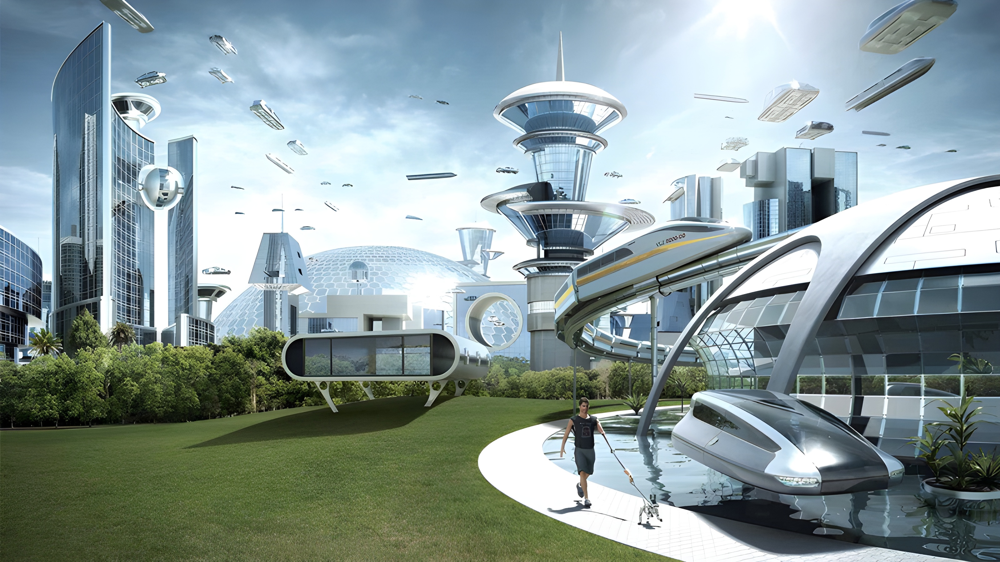

Az Emberiség Jövője
A probléma
A Föld 2022 novemberében elérte a 8 milliárd fős népességet. Az ilyen mértékű népességnövekedést nem lehet fenntartani.
Hogyan oldjuk meg?
Ezen probléma megoldásához a Földön kívül kell gondoznunk.
A Dragon és Starship űrhajók fejlesztése lehetővé teszi az űrbe való utazást. A Mars kolonizálásával egyre több embert juttathatunk a Földön kívülre.
Ha maradunk
Nem mindenkit tudunk eljuttatni a Földön kívülre, így a Földön maradóknak is meg kell oldaniuk a problémát.
A technológia az utolsó 100 évben többet fejlődött, mint évezredekkel előtte. Mesterséges Intelligenciával együtt fejlesztjük majd a földi élőhelyünket.
Létrehozunk olyan járműveket, ami ma elképzelhetetlennek tűnhet, de a jövőben már a mindennapjaink része lesz.